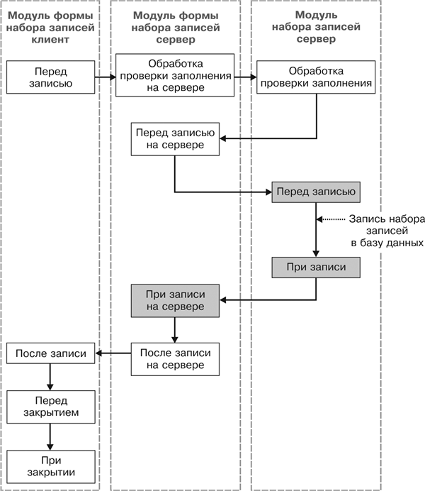

1.2.11.2. Последовательность событий при сохранении набора записей регистра накопления из формы набора записей
Рис. 29.20. Последовательность событий при сохранении набора записей регистра накопления из формы набора записей
ПРИМЕЧАНИЕ
Заливкой выделены события, выполняющиеся в транзакции записи.
|